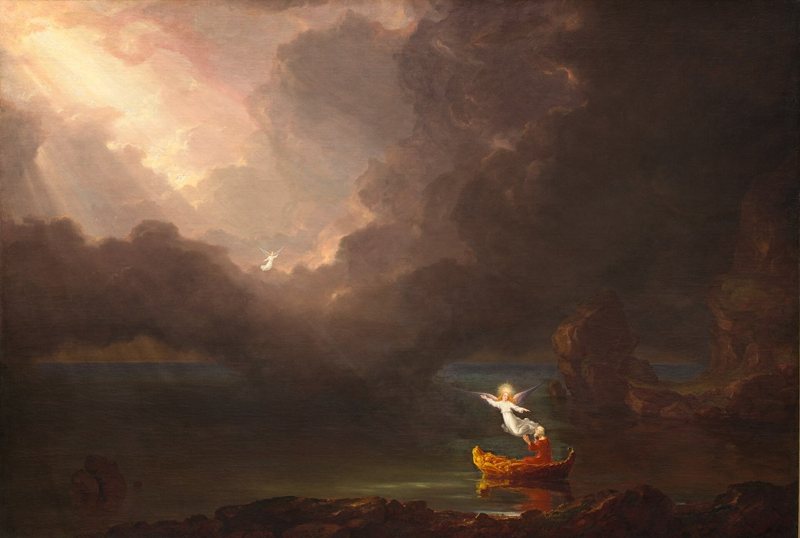

Salmo 90 — La Traducción Mister

Salmo 90. El último de los cuatro cuadros de Cole de una vida en un bote sobre un río, aquí al final, donde el río se ha vuelto mar y el anciano mira hacia arriba. No es una ilustración del salmo, y el cuadro no tiene a Moisés ni escritura alguna; lo que comparte con el salmo es el horizonte: una persona cerca del final de los días, y una luz que todavía está algo lejos.
.jpg){kind=link}
Notas del traductor — versículo por versículo
⭐ «De Moisés, varón de Dios». El encabezado es tefillah lemoshe ish ha’elohim, «una oración, de Moisés, varón de Dios». «Moisés, varón de Dios» está en seis versículos de la Biblia hebrea: Deuteronomio 33:1, donde abre la última bendición de Moisés (Deuteronomio 33:1, ya en estas páginas), luego Josué 14:6, 1 Crónicas 23:14, 2 Crónicas 30:16, este versículo y Esdras 3:2. El hebreo no dice que Moisés la escribiera, solo que es de él, con la misma lamed que está delante del nombre de David en sus encabezados. La RV 1909 imprime «Oración de Moisés varón de Dios» dentro del versículo. El encabezado y la primera línea son un solo versículo en el hebreo, como en el Salmo 130:1, así que los números de versículo de aquí son los del estante.
⭐ «Una morada». Ma’on es una morada, un hogar (diccionario), y «una morada eres tú» está en este único versículo. Es la palabra que Moisés usa en su última bendición, «una morada es el Dios de antiguo» (Deuteronomio 33:27, ya en estas páginas), y la que tiene el salmo siguiente, «has puesto al Altísimo por tu morada» (Salmo 91:9, ya en estas páginas). La primera línea pone a la gente en un hogar que es Dios, en las generaciones que siguen, antes de que el salmo se vuelva a lo que son las generaciones. La RV 1909 dice «tú nos has sido refugio», la RV60 «tú nos has sido refugio», la NVI «nuestro refugio», la TNM 1987 «una verdadera morada» y la TNM 2019 «nuestra morada». El nombre de Dios en la línea es Adonai, «el Señor»; el nombre Jehová no llega hasta el versículo 13.
⭐ Nacidos, y con dolores. «Antes que nacieran los montes»: la cláusula está en este único versículo, con los montes como algo que tiene un nacimiento, y la cláusula siguiente continúa la imagen, vatecholel, de chul, retorcerse, estar de parto, con «la tierra y el mundo» (tevel). Quién está de parto, Dios o la tierra, no lo decide la gramática, y el estante se divide: la RV 1909 dice «Antes que naciesen los montes Y formases la tierra y el mundo», la NVI «que crearas la tierra y el mundo», la TNM 1987 «producir como con dolores de parto la tierra» y la TNM 2019 «produjeras la tierra y el terreno productivo». El final del versículo es una frase que está una sola vez: «de eternidad a eternidad» en esta forma está en este único versículo, me’olam ad olam; los vecinos tienen una forma más larga, «de eternidad y hasta eternidad» con vav (Salmo 103:17, ya en estas páginas). La RV 1909 dice «desde el siglo y hasta el siglo», la NVI «desde los tiempos antiguos y hasta los tiempos postreros», la TNM 1987 «de tiempo indefinido a tiempo indefinido» y la TNM 2019 «desde siempre y para siempre».
⭐ «Vuelvan, hijos del hombre». Tashev enosh ad dakka: haces volver al hombre a dakka, materia triturada, aplastamiento (diccionario); «al aplastamiento» está en este único versículo. El verbo, shuvu, «vuelvan», es el verbo del Edén: «pues polvo eres, y al polvo volverás» (Génesis 3:19, ya en estas páginas), y «pues polvo eres» está en ese único versículo. La RV 1909 dice «Vuelves al hombre hasta ser quebrantado», la RV60 «Vuelves al hombre hasta ser quebrantado», la NVI «Tú haces que los hombres vuelvan al polvo», la TNM 1987 «vuelva a la materia triturada» y la TNM 2019 «vuelva al polvo». «Vuelvan, hijos del hombre» está en este único versículo.
⭐ Mil años, y una vigilia. «Mil años a tus ojos son como el día de ayer cuando pasa, y una vigilia en la noche»: la palabra ashmurah, «y una vigilia», está en este único versículo (diccionario), un turno de la guardia, el mismo guardar que los centinelas del Salmo 130:6 (ya en estas páginas). La suma se da vuelta en la carta de Pedro, «para el Señor un día es como mil años, y mil años como un día» (2 Pedro 3:8, ya en estas páginas). La RV 1909 dice «una de las vigilias de la noche», la NVI «una vigilia de la noche», la TNM 1987 «una vigilia durante la noche» y la TNM 2019 «una vigilia de la noche».
⭐ Arrastrados, y hierba. Zeramtam, «los arrastras», es una palabra de inundación, y la forma está en dos versículos, aquí y Ezequiel 23:20, donde se usa de un flujo muy distinto; la RV 1909 dice «como avenida de aguas», la RV60 «como con torrente de aguas», la NVI «Arrasas a los mortales», la TNM 1987 «Los has llevado arrollando» y la TNM 2019 «Arrasas con ellos». El sueño y la hierba de la mañana: «como la hierba que pasa» está en este único versículo, y la misma hierba de la mañana está en Isaías 40:6–8 y el Salmo 103:15 (ambos ya en estas páginas). El versículo 6 repite el día en pequeño, «por la mañana florece … al atardecer es cortada». La RV 1909 dice «A la tarde es cortada, y se seca», la NVI «por la noche ya está marchita y seca» y la TNM 1987 «al atardecer se marchita y ciertamente se seca».
⭐ Consumidos, y terminados. El versículo 7 y el versículo 9 tienen el mismo verbo en dos formas: kalinu, «somos consumidos», y killinu, «acabamos»; las consonantes son las mismas, y el salmo pone el fin del pueblo junto a la ira en el versículo 7 y el terminar del propio pueblo en el versículo 9. La RV 1909 dice «con tu furor somos consumidos», la NVI «Tu ira en verdad nos consume» y la TNM 1987 «nos hemos acabado en tu cólera».
⭐ «Nuestras cosas ocultas». Alumenu: la palabra está en este único versículo (diccionario), de alam, ocultar, y son las cosas secretas, puestas «a la luz de tu rostro», limeor panekha (diccionario). La primera línea tiene un par de escrito y leído: el hebreo imprime shat y luego shattah, «has puesto», la forma escrita sin su letra final; es un par ketiv/qere, conservado en la columna hebrea. La RV 1909 dice «Nuestros yerros á la luz de tu rostro», la RV60 «Nuestros yerros a la luz de tu rostro», la NVI «nuestros pecados secretos», la TNM 1987 «nuestras cosas escondidas, delante de tu rostro brillante» y la TNM 2019 «nuestros secretos al descubierto».
⭐ «Como un suspiro». Kemo hegeh: «como un suspiro» está en este único versículo (diccionario), el sonido del aliento, un murmullo, un quejido. La RV 1909 dice «como un pensamiento», la NVI «como un suspiro», la TNM 1987 «lo mismo que un susurro» y la TNM 2019 «como un suspiro».
⭐ Setenta. «Los días de nuestros años son setenta años»: «los días de nuestros años» está en este único versículo. «Setenta años» está en quince versículos de la Biblia hebrea. Además de este, son edades en Génesis (5:12, 5:31, 11:26, 12:4 y 25:7), una sentencia sobre Tiro (Isaías 23:15 y 23:17), y los setenta años del exilio (Jeremías 25:11–12, ya en estas páginas, Jeremías 29:10, Zacarías 1:12, Zacarías 7:5, 2 Crónicas 36:21 y Daniel 9:2). Así que la cifra que vive una persona y la cifra que espera una nación son la misma palabra.
⭐ «Su orgullo es fatiga y maldad». La segunda mitad es una línea de enigma: verahbam amal va’aven; «y su orgullo» está en este único versículo, y la suma es «fatiga y maldad», o problemas y penas, y el versículo cierra, «porque pronto es cortado» está en este único versículo, gaz chish, y «volamos». La RV 1909 dice «es molestia y trabajo», la RV60 «su fortaleza es molestia y trabajo», la NVI «solo traen problemas y penas», la TNM 1987 «penoso afán y cosas perjudiciales» y la TNM 2019 «están llenos de dificultades y penas».
⭐ «¿Quién conoce?» El versículo 11 pregunta, mi yode’a oz apekha, «¿quién conoce la fuerza de tu ira?», y la segunda mitad la mide por el temor, «y tu furor según el temor de ti». La RV 1909 dice «¿Quién conoce la fortaleza de tu ira», la RV60 «el poder de tu ira», la NVI «¿Quién puede comprender el poder de tu ira?», la TNM 1987 «¿Quién hay que conozca la fuerza de tu cólera» y la TNM 2019 «¿Quién puede descifrar el poder de tu furia?».
⭐ «A contar nuestros días». «a contar nuestros días» está en este único versículo, limnot yamenu, y «un corazón de sabiduría» está en este único versículo, levav chokhmah. El verbo que pide que Dios enseñe es hoda, «haz saber», y el hebreo pone primero el contar y después el pedir. La RV 1909 dice «Enséñanos de tal modo á contar nuestros días, Que traigamos al corazón sabiduría», la NVI «Enséñanos a contar bien nuestros días», la TNM 1987 «Muéstranos precisamente cómo contar nuestros días» y la TNM 2019 «Enséñanos a contar nuestros días». Para el corazón, la NVI dice «para que nuestro corazón adquiera sabiduría», la TNM 1987 «hagamos entrar un corazón de sabiduría» y la TNM 2019 «para que consigamos un corazón sabio».
⭐ El nombre, una vez. El nombre Jehová está en este salmo una vez, aquí. La línea es «vuelve, Jehová» en cuatro versículos de la Biblia hebrea, Números 10:36, Salmo 6:5, este versículo y Salmo 126:4. El ruego que sigue, «y siente pesar por» está en dos versículos, este y el ruego del propio Moisés ante el becerro de oro, «Vuélvete del ardor de tu ira y desiste del mal contra tu pueblo» (Éxodo 32:12, ya en estas páginas). La oración de Moisés usa las palabras de Moisés. La RV 1909 dice «Vuélvete, oh Jehová: ¿hasta cuándo? Y aplácate para con tus siervos», la NVI «¡Compadécete ya de tus siervos!», la TNM 1987 «siente pesar respecto a tus siervos» y la TNM 2019 «Ten compasión de tus siervos».
⭐ «Por la mañana». La hierba era verde «por la mañana» (versículos 5 y 6); ahora la oración pide la mañana de vuelta: «sácianos por la mañana con tu amor leal» está en este único versículo, con chesed (diccionario), y luego la alegría del versículo 15 se mide contra la aflicción, «alégranos como los días» está en este único versículo. La RV 1909 dice «Sácianos presto de tu misericordia», la RV60 «De mañana sácianos de tu misericordia», la NVI «Sácianos de tu gran amor por la mañana», la TNM 1987 «Satisfácenos a la mañana con tu bondad amorosa» y la TNM 2019 «Sácianos de tu amor leal por la mañana». Para el segundo, la RV 1909 dice «Alégranos conforme á los días que nos afligiste», la NVI «Alégranos conforme a los días que nos has afligido» y la TNM 2019 «Compénsanos con alegría por los días en que nos has hecho sufrir».
⭐ La obra, y la obra de nuestras manos. La po’olekha de Dios, «tu obra», y su hadarkha, «tu esplendor», han de verse en los siervos y sobre sus hijos; luego el salmo se vuelve a la obra del pueblo. «El favor del Señor» está en este único versículo, no’am, amabilidad, favor (diccionario), y las dos últimas líneas dicen lo mismo dos veces: «y la obra de nuestras manos, confírmala» está en este único versículo, y luego otra vez, «y la obra de nuestras manos, confírmala». La RV 1909 dice «Y sea la luz de Jehová nuestro Dios sobre nosotros», la RV60 «Sea la luz de Jehová nuestro Dios sobre nosotros», la NVI «Que el favor del Señor nuestro Dios esté sobre nosotros», la TNM 1987 «la agradabilidad de Jehová nuestro Dios» y la TNM 2019 «Que la bendición de Jehová nuestro Dios esté sobre nosotros». Para la obra, la RV 1909 dice «Y ordena en nosotros la obra de nuestras manos», la RV60 «la obra de nuestras manos confirma sobre nosotros», la NVI «Confirma en nosotros la obra de nuestras manos», la TNM 1987 «establece firmemente sobre nosotros la obra de nuestras manos» y la TNM 2019 «Haz prosperar el trabajo de nuestras manos».
Patrones que vale la pena llevar adelante
Dónde esta traducción mantiene las palabras exactas y distintas: «una morada» para ma’on; «aplastamiento» para dakka; «iniquidades» para avonot, como en el Salmo 130:3; «amor leal» para chesed; «sentir pesar» para nacham, como en Éxodo 32:12; «el Señor» para Adonai y «Jehová» para el nombre. El hebreo tiene un par de escrito y leído en este salmo, shat y shattah en el versículo 8, conservado como se imprime.
Ecos pagados. La bendición de Moisés varón de Dios (Deuteronomio 33:1 y 33:27); el polvo de Génesis 3:19; la morada del Salmo 91:9 y lo eterno del Salmo 103:17; la hierba de Isaías 40:6–8 y el Salmo 103:15; los centinelas del Salmo 130:6; los mil años de 2 Pedro 3:8; los setenta años de Jeremías 25:11–12; y el desistir de Éxodo 32:12.
Ecos plantados. Los otros versículos de «Moisés varón de Dios» (Josué 14:6, 1 Crónicas 23:14, 2 Crónicas 30:16, Esdras 3:2); la inundación de Ezequiel 23:20; los otros ruegos de «vuelve, Jehová» (Números 10:36, Salmo 6:5, Salmo 126:4); y los otros setenta años (Jeremías 29:10, Zacarías 1:12, Zacarías 7:5, 2 Crónicas 36:21, Daniel 9:2). Ninguno de estos está todavía en estas páginas.
⚠ Una nota sobre el orden: los Salmos están en estas páginas en el 1, 8, 19, 22, 23, 24, 25, 27, 34, 37, 46, 51, 56, 90, 91, 100, 103, 118, 119, 121, 130, 139 y 150, elegidos por lo mucho que se leen y no en orden. El hilo secuencial no cambia: el siguiente en la secuencia es el Salmo 2.